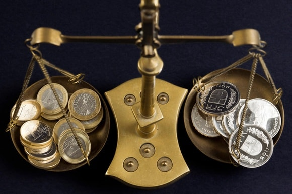

Una de las razones por la cual se deberia de usar la moneda poioCoin a diferencia de las otras, es que esta posee unas caracteristicas y trae consigo unas ventajas con el unico objetivo de beneficiar al usuario.
Caracteristicas de PoioCoin
Criptografía: esta utiliza técnicas de cifrado para realizar cobros y pagos seguros. Descentralización: no necesitan ser controlado por ninguna institución. No hay posibilidad de falsificación o duplicación: es un sistema criptográfico que protege a los usuarios. No hay intermediarios: contacto directo persona a persona. Las transacciones son irreversibles: una vez se efectúe el pago, no hay posibilidad de cancelación. Se pueden intercambiar por otras divisas. Privacidad de uso: no es necesario revelar tu identidad al hacer negocios.

Ventajas de usar PoioCoin
Bajos costes de transacción, esta se genera como consecuencia de la no presencia de intermediarios. Seguridad, pues cada moneda pertenece solo a su dueño. Transparencia, ya que las transacciones se incorporan en un registro de acceso libre. Se acumula en un espacio ínfimo como es un USB.